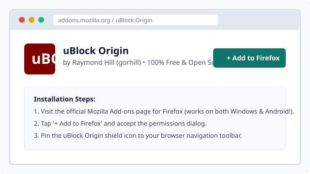
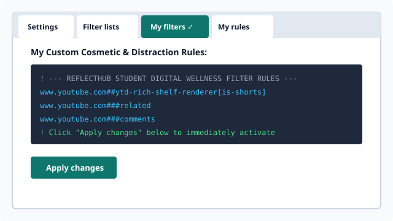
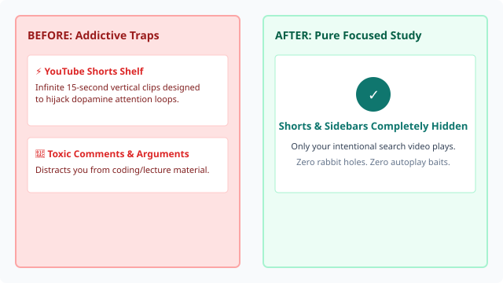
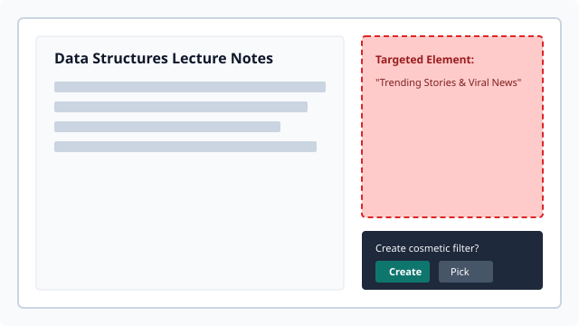
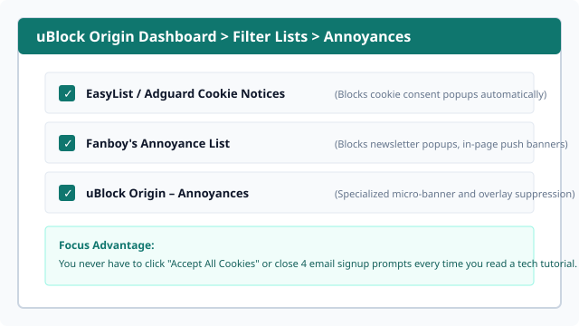
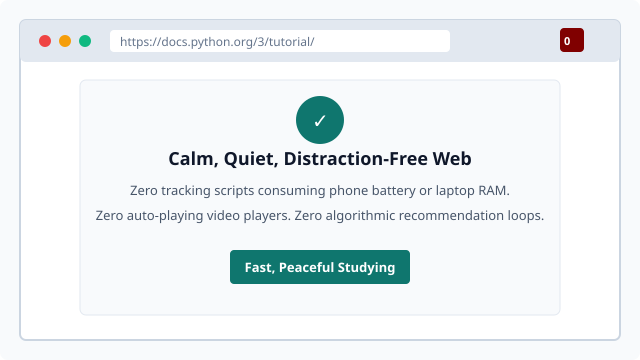

uBlock Origin is the gold standard of open-source content blockers, created by Raymond Hill. Unlike commercial adblockers, it accepts no sponsored whitelists and sells no user data.

Figure 3.1: Install uBlock Origin from the official browser add-on store. (Beware of fake copycats!).
Visit the official add-on store for your browser (e.g., Firefox Add-ons or Chrome Web Store) and install uBlock Origin. On Android phones, you can install Firefox for Android, which natively supports full desktop uBlock Origin extensions.
Click the maroon uBlock shield icon on your browser toolbar and click the gear/cogs icon to launch the uBlock Origin Dashboard.

Figure 3.2: The My Filters tab in uBlock Origin where custom CSS distraction rules are defined.
Click on the "My filters" tab at the top. This editor allows you to write custom cosmetic element hiding rules (CSS selectors) that run locally inside your browser to suppress distracting page components.
Copy and paste the verified filter block below directly into your My Filters editor:
! === REFLECTHUB DIGITAL WELLNESS COSMETIC FILTERS ===
! 1. Hide YouTube Shorts shelf on homepage and search results
www.youtube.com##ytd-rich-shelf-renderer[is-shorts]
www.youtube.com##ytd-reel-shelf-renderer
www.youtube.com##[title="Shorts"]
! 2. Hide YouTube related recommendations sidebar on video watch pages
www.youtube.com###related
! 3. Hide distracting YouTube comment section during lectures
www.youtube.com###comments
! 4. Hide LinkedIn promoted job feeds and news widgets
www.linkedin.com##.feed-shared-update-v2:has(.feed-shared-actor__sub-description:has-text(Promoted))
www.linkedin.com###feed-news-module
! 5. Hide Twitter/X "Trending" and "Who to follow" sidebars
twitter.com,x.com##[aria-label="Timeline: Trending now"]
twitter.com,x.com##[aria-label="Who to follow"]
Click the orange "Apply changes" button in the top left corner of the dashboard.

Figure 3.3: Before and after applying cosmetic rules. Algorithmic rabbit holes are eliminated.
When researching coursework, you may encounter academic blogs, coding forums, or news sites covered in "Trending Articles" widgets or animated popovers.

Figure 3.4: Using the element picker (eye-dropper icon) to permanently zap unwanted page elements.
- Click the uBlock shield icon and click the Eye-dropper icon (Element Picker).
- Hover over the distracting banner or sidebar until it glows in red.
- Click on the element. In the dialog box that appears in the lower right, preview the change and click Create.
- The element is permanently hidden across all future visits to that domain.
Few things break study concentration faster than having to click "Accept Cookies", close newsletter prompts, and dismiss mobile app banners every time you open a documentation page.

Figure 3.5: Activating community-maintained Annoyance lists to block cookie popups automatically.
In the uBlock dashboard, switch to the "Filter lists" tab. Expand the "Annoyances" section and check:
- EasyList / Adguard Cookie Notices: Automatically suppresses annoying GDPR/cookie consent overlays.
- Fanboy's Annoyance List: Suppresses in-page push notification requests and modal newsletters.
- uBlock Origin – Annoyances: Strips micro-banners and floating social widgets.
Click "Update now" at the top of the Filter lists page.
Open YouTube and any technical programming documentation site. Notice how instantly pages load without video popups, sponsored overlays, or infinite vertical reels.

Figure 3.6: Fast, serene, distraction-free reading environment. Your laptop fan stays quiet and battery lasts longer.
By eliminating tracking scripts and intensive video feeds, your laptop processor uses less energy, prolonging battery life during long campus library sessions while preserving your cognitive bandwidth.